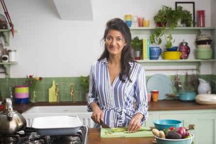

T his week Pret a Manger sparked uproar when it launched a range of new supersized salads. It came as a response to what Pret said was a “shift in what customers want from lunch”, though possibly not from their wallet, with the premium salads priced £10-£13.
But how good are they? And is it right that they cost that much? I set off to recreate the miso salmon super plate at home. It’s fun copying the ingredients off the back of a packet to come up with a recipe. With the miso salmon plate, I’m impressed by the original: the plate looks very pretty, and the lightly smoked salmon fillet has an excellent texture. The tenderstem broccoli is just-blanched, and pleasingly crunchy.
It’s only when I compare the miso-orange dressing with my own version that I realise quite how much sugar must have gone in – ditto the chilli aubergine, which is a bit gloopy (thanks, cornflour). But it’s a generous dish, and with a triple hit of protein from the salmon, soya beans and quinoa, I have none of my usual sugar/chocolate cravings in the afternoon.
Based on the texture of the Pret aubergine, I treated it like the Korean side-dish gaji-namul – steaming the aubergine before stirring through the dressing (minus the cornflour). The homemade dish is very close in taste, but overall my dish tastes punchier, because I used freshly grated ginger and garlic throughout, rather than pastes.
The significant difference is the cost: Pret’s salad comes in at £12.95, while my homemade one comes in at about £8.14 a person, after factoring in the proportion of each packet or jar used (I got most of it from Sainsbury’s and the more unusual or less widely available ingredients from Sous Chef). But if you haven’t already got shichimi togarashi, gochugaru (red pepper flakes) or aonori seaweed in your cupboard, then you’re setting yourself back £11.65 just on “store-cupboard ingredients” you might never use again. So £8-ish, plus an initial outlay of £12 to recreate this at home, which is more than a bit steep.
The clincher? I’m not the kind of home cook or food writer who ever, ever wants you to have to use two pans, a steamer, two sieves, three bowls and a baking tray to make a single dish. You might not mind several processes and more than an hour hands-on time for a recipe, but I really do .
Ultimately, I’d say the Pret salad is worth £12.95, because there’s no outlay on expensive store-cupboard ingredients and, given its quality (it’s fresher than comparable on the go post-workout meals). And it’d certainly save me £3-£4 on cake/cookies/ice-cream in the afternoon.
Photograph: Publicity image
How to make a miso salmon super plate at home
Prep Interminable Cook 20 min Cost £8.14 a portion Serves 2
2 lightly smoked salmon fillets 2 teaspoons mixed seeds 2 teaspoons shichimi togarashi ½ teaspoon aonori seaweed ½ teaspoon sea salt flakes ½ tablespoon rapeseed oil 50g mixed black & white quinoa ½ aubergine , sliced lengthways and cut into 1cm quarter moons
1 clove garlic , peeled and grated 2 tsp gochugaru (red pepper powder) ¼ tsp chilli powder 20ml rapeseed oil 5ml brown rice vinegar ½ tsp sugar ½ tsp sea salt flakes 6 stems tenderstem broccoli 4 heaped tbsp edamame beans 2 handfuls mixed salad leaves 1 ripe avocado , finely sliced and dressed with a little lemon juice 15ml rapeseed oil 15g miso paste (I used red) 10ml brown rice vinegar ½ tsp finely grated ginger ½ tsp finely grated garlic ½ tsp sugar Pinch chilli powder Pinch sea salt flakes ½ lime , cut into quarters to serve
Heat the oven to 200C (180C fan)/gas 6. Put the salmon on a lined baking tray, and scatter with the mixed seeds, shichimi togarashi, aonori seaweed and sea salt flakes. Drizzle with the oil, then bake for 12-14 minutes, until just cooked through.
Boil the quinoa in a pan of boiling water for 20 minutes, then drain well and leave to steam-dry for 10 minutes.
Put the aubergine in a steamer set over boiling water, and steam for eight minutes, until just cooked through. While the aubergine is steaming, mix the garlic, gochugaru, chilli powder, rapeseed oil, brown rice vinegar, sugar and sea salt flakes. As soon as the aubergine is done, stir it through the chilli dressing and set aside for 10 minutes.
Put the broccoli in a pan or large bowl of boiling water, leave to blanch for a minute, then drain well.
Whisk all the dressing ingredients. Put the salad leaves in a bowl, then arrange the salmon, tenderstem, avocado, aubergine, quinoa, edamame and lime quarter on top, and serve the dressing alongside.